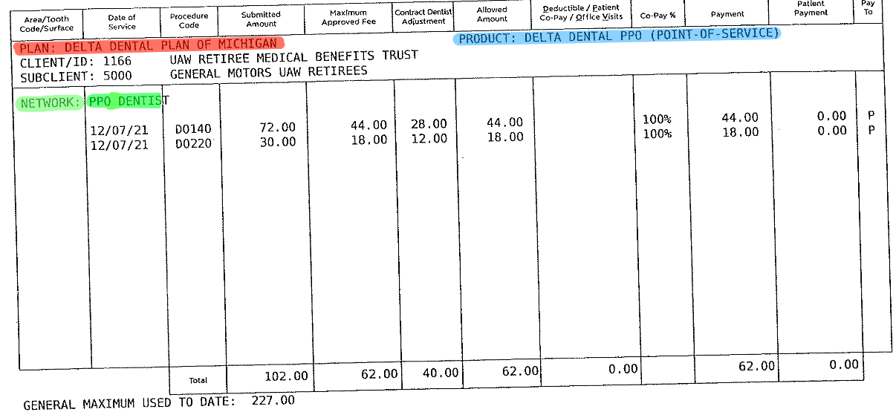
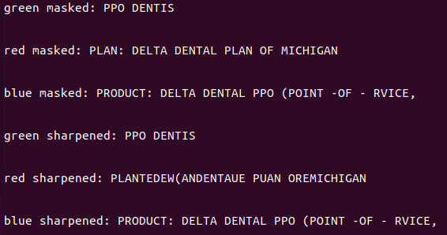

HIGHLIGHT RECOGNITION
We started off with the idea of highlighting the important data fields in order to categorize them. This turned out to be a not-so-efficient way to solve the problem, but had some interesting results.
Text was highlighted in three colors: Red, Green, and Blue. We then used python and opencv (cv2) to create a color mask which would isolate the data fields. A mask for each color was applied to the highlighted document.
Additionaly, we wanted to improve the text recognition by transforming the masked images with a sharpening filter. This sharpening was accomplished by applying a matrix kernel to the image pixels which consentrated the lines of each word in the data field. The sharpened images turned out to be less recognizable than the original.
Then, the masked image was interpreted by the opencv (cv2) library to extract the text which was highlighted.
This extracted text from the data fields which were highlighted could then be labeled according to the color which was used. After labelling the data might be exported to a comma sepperated value file for easier processing.
The algorithm was not perfect at recognizing the text. A possible soluting to this approach might include a predictive matching algorithm that recognizes when the interpreted text is clode to an expected string. After recognizing the similarity, the program might replace the incorrect text with what is expected for that field.